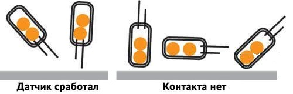
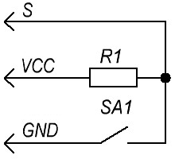
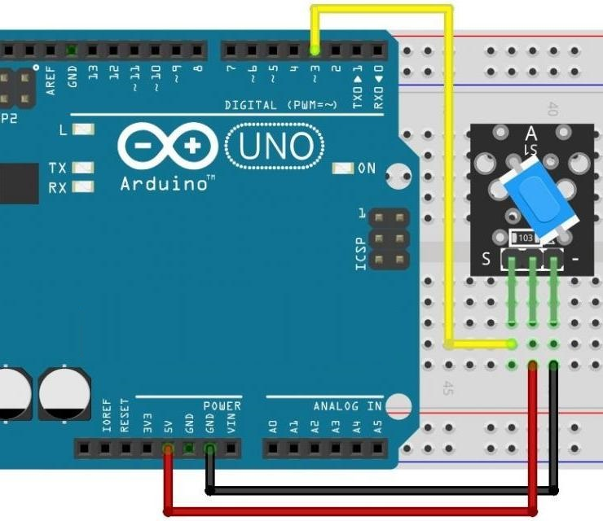

Модуль датчика наклона KY-020
Модуль KY-020 оснащён шариковым датчиком наклона. Принцип работы модуля наклона KY-020 основан на замыкании цепи двумя металлическими шариками. При наклоне датчика шарики перемешаются и при попадании на контакты замыкают цепь. KY-020 состоит из резистора 10 кОм и шарового переключателя с двунаправленной проводимостью, который размыкает/замыкает цепь в зависимости от степени ее наклона. Угол наклона не измеряется.


В схеме датчика наклона KY-020 присутствует сопротивление, которое подтягивает сигнальный выход к питанию, а сам датчик при срабатывании замыкается на землю.

Технические характеристики модуля KY-020:
- Рабочее напряжение — 3,3…5 В.
- Тип выхода — Цифровой.
Назначение выводов представлено в таблице 1.
Таблица 1
| Контакт | Назначение |
|---|---|
| VSS | +5 В - Питание положительный полюс |
| — | Общий (GND) |
| S | Сигнальный |

Скетч
Включение светодиода при наклоне модуля KY-020.
int led = 13 ; // назначение пина для светодиода int SensorPin = 3; // назначение пина для датчика наклона int status ; // переменная для хранения значения датчика void setup () { pinMode(led, OUTPUT) ; // пин светодиода работает как выход pinMode(SensorPin, INPUT) ; //пин датчика наклона работает как вход } void loop () { status = digitalRead(SensorPin) ;// чтение значения с датчика if (status == HIGH) //когда с датчика появляется высокий уровень { digitalWrite(led, HIGH); //светодиод светится } else { digitalWrite(led, LOW); } }
Источники
arduino-tex.ru - KY-020 - датчики наклона. Подключение к Arduino.